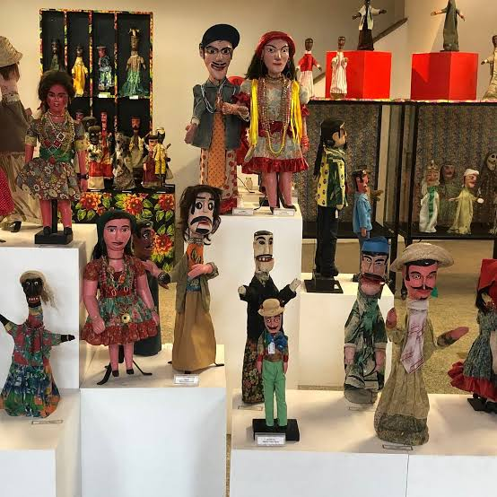
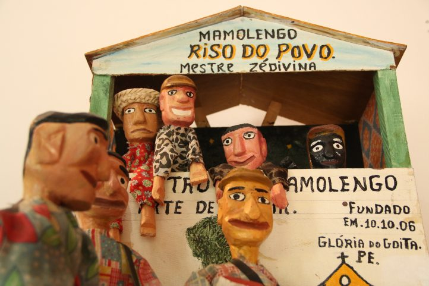
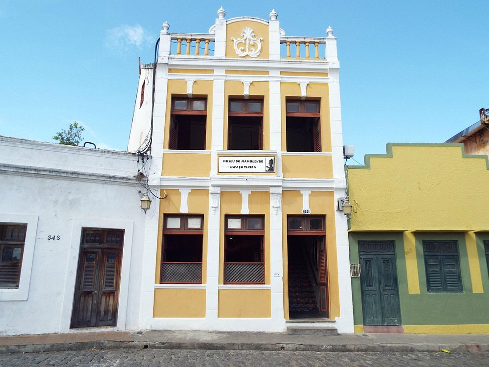
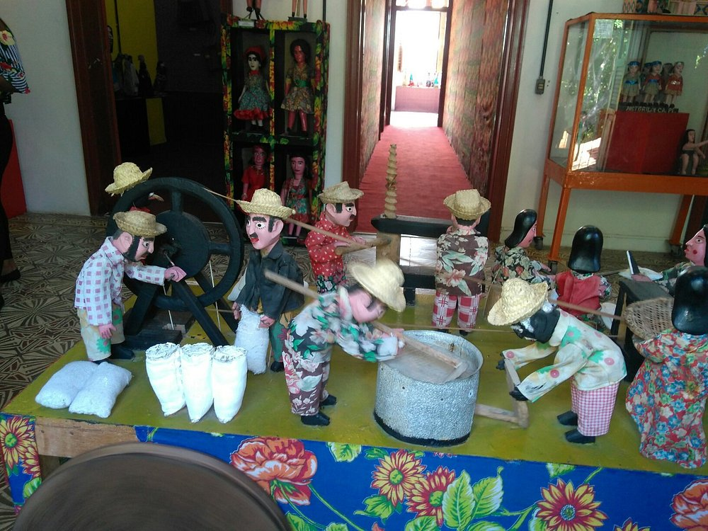
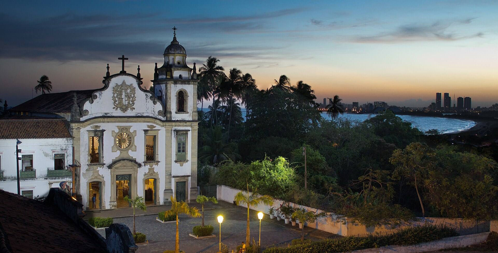
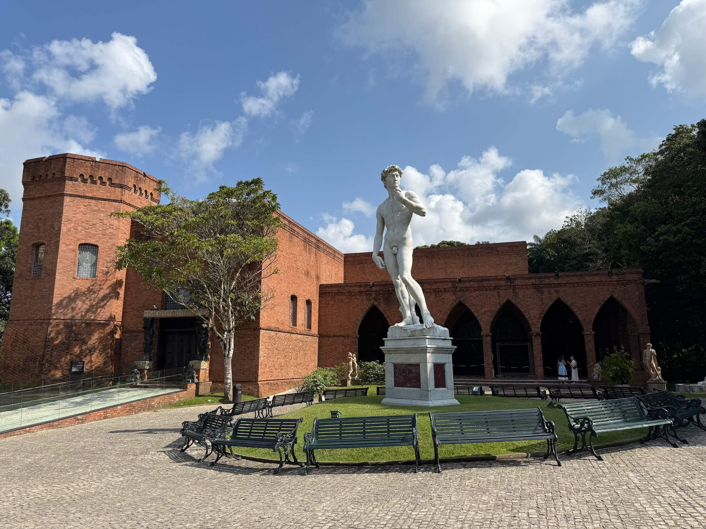

Acervo tátil
Verificado
Data de verificação:

O Museu do Mamulengo Espaço Tiridá, localizado no Sítio Histórico de Olinda, preserva e celebra a tradição do teatro de bonecos popular nordestino, reunindo centenas de peças históricas e atividades culturais interativas.




| Dia | Abertura | Fechamento |
|---|---|---|
| Segunda-feira | — | — |
| Terça-feira | 09:00 | 17:00 |
| Quarta-feira | 09:00 | 17:00 |
| Quinta-feira | 09:00 | 17:00 |
| Sexta-feira | 09:00 | 17:00 |
| Sábado | 09:00 | 17:00 |
| Domingo | 09:00 | 17:00 |
Telefone: (81) 3429-6263
Gratuito para pessoas com deficiência (PCD)
Demais visitantes: R$ 5,00 (inteira) | R$ 2,50 (meia)
Verificado
Data de verificação:
Verificado
Data de verificação:
Verificado
Data de verificação:
Endereço: Rua de São Bento, 344 - Amparo / Varadouro,
Olinda – PE, CEP 53020-081
Valeu muito a pena a visita, com certeza voltarei.
Acervo encantador e muito acolhedor.


